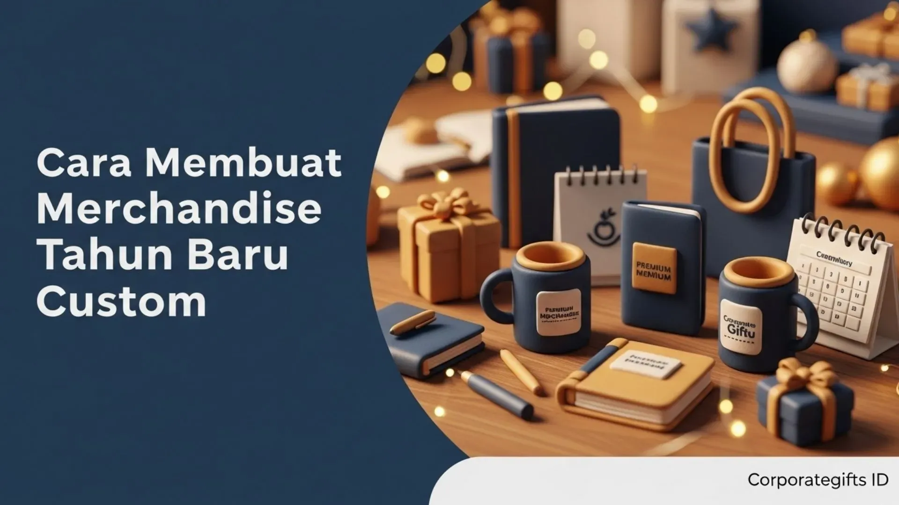

Corporate Gifts ID - Merchandise Tahun Baru custom yang dirancang dengan strategi matang adalah media komunikasi visual yang sangat efektif untuk menyampaikan apresiasi, mempererat loyalitas kemitraan, serta mengukuhkan identitas merek perusahaan. Menjelang pergantian tahun, pemberian merchandise korporat bukan sekadar agenda seremonial tahunan, melainkan investasi branding yang mampu membangun ikatan emosional mendalam bagi karyawan internal maupun relasi bisnis eksternal.
Membuat merchandise custom yang berkesan membutuhkan pemahaman komprehensif mulai dari segmentasi audiens, kurasi produk fungsional, penerapan identitas visual yang elegan, hingga pemilihan material ramah lingkungan yang sejalan dengan tren keberlanjutan modern.
Poin Kunci Merchandise Tahun Baru Custom:
- Segmentasi Jelas: Membedakan kurasi merchandise untuk penyemangat kerja karyawan vs hadiah relasi bisnis VIP.
- Konsistensi Visual: Menerapkan logo, kode warna brand, dan pesan motivasional Tahun Baru secara proporsional.
- Kualitas Material: Mengutamakan material tahan lama dan bahan ramah lingkungan (eco-friendly).
- Kemasan Eksklusif: Pengemasan hardbox premium meningkatkan persepsi nilai hadiah dan menghadirkan momen unboxing yang istimewa.
- Vendor Terpercaya: Bermitra dengan vendor resmi yang menyediakan sampel fisik dan jaminan ketepatan waktu pengiriman.
1. Tentukan Tujuan dan Segmentasi Penerima
Langkah pertama yang paling fundamental dalam merancang merchandise custom adalah memahami siapa target penerima dan apa objektif bisnis yang ingin dicapai. Segmentasi yang tepat akan memandu Anda menentukan jenis barang, batas anggaran, hingga nada pesan yang disematkan:
- Untuk Karyawan Internal: Fokuskan pada produk yang mendukung produktivitas kerja dan membangkitkan semangat memulai tahun baru, seperti tumbler vacuum stainless, hoodie korporat, atau notebook agenda kulit.
- Untuk Klien & Mitra Bisnis: Pilih merchandise berkategori eksekutif dengan kemasan gift set eksklusif agar mencerminkan reputasi prestisius instansi Anda.
- Untuk Acara Perusahaan (Year-End Gathering): Gunakan paket souvenir yang menonjolkan tema perayaan tahun baru dan visi misi pencapaian perusahaan ke depan.
2. Pilih Produk yang Mewakili Identitas Brand
Merchandise terbaik adalah merchandise yang memiliki keselarasan kuat dengan karakter dan identitas industri perusahaan Anda. Perusahaan teknologi dapat memilih produk lifestyle digital, sedangkan institusi yang mengedepankan nilai tanggung jawab sosial dapat memilih opsi ramah lingkungan.
Rekomendasi Kategori Produk Populer:
- Kalender Meja Custom: Dilengkapi penanggalan libur nasional, foto pencapaian proyek, dan kutipan motivasional bulanan.
- Tumbler Eco-Friendly SUS 304: Wadah minum higienis berteknologi insulasi suhu untuk menemani mobilitas harian.
- Paket Alat Tulis Eksekutif: Kombinasi buku agenda hardcover dan pena metal berlogo grafir laser.
- Apparel Korporat: Kaos polo atau jaket dengan bordir logo halus bertema semangat tahun baru.

Pengemasan gift set dengan hardbox eksklusif dan kustomisasi logo foil emas memperkuat impresi mewah.
3. Desain Merchandise yang Berkesan dan Konsisten
Desain adalah faktor utama yang membedakan cinderamata biasa dengan gift set korporat bernilai tinggi. Kunci desain merchandise yang sukses terletak pada kesederhanaan (simplicity) dan konsistensi terhadap identitas visual brand:
- Gunakan Desain Minimalis: Hindari penempatan grafis yang terlalu ramai; komposisi yang bersih memberikan kesan lebih mahal dan elegan.
- Sisipkan Unsur Resolusi: Tambahkan tagline singkat yang menginspirasi pencapaian target dan optimisme di tahun baru.
- Perhatikan Proporsi Logo: Penempatan logo berukuran proporsional membuat penerima lebih percaya diri menggunakan produk di ruang publik.
- Gunakan Format Vektor: Pastikan master file desain menggunakan format berbasis kurva (AI, EPS, atau PDF) agar ketajaman cetak tidak pecah.
4. Tabel Rekomendasi Merchandise Berdasarkan Segmentasi
Berikut panduan kurasi paket merchandise Tahun Baru dari Corporate Gifts ID yang disesuaikan dengan segmentasi penerima dan skala anggaran:
| Segmentasi Penerima | Kombinasi Produk Rekomendasi | Material & Finishing | Karakter Kemasan | Tujuan Utama |
|---|---|---|---|---|
| Karyawan Internal | Tumbler SUS 304 + Agenda + Kaos Polo | Stainless, PU Leather, Katun CVC | Tote Bag Canvas / Box Silinder | Penyemangat kerja & employee retention |
| Mitra Bisnis / Klien B2B | Executive Pen + Desk Organizer + Powerbank | Metal Grafir, Kulit Sintetis, ABS Matt | Hardbox Bespoke Pita Satin | Penguatan kemitraan & citra VIP |
| Acara Gathering Publik | Kalender Meja + Goodie Bag + Gantungan Kunci | Art Carton, Kanvas Katun, Kayu Daur Ulang | Paper Bag Berlogo | Peningkatan brand awareness massal |
5. Pilih Material Berkualitas dan Ramah Lingkungan
Kualitas material berbanding lurus dengan persepsi nilai brand yang Anda tampilkan. Saat ini, inisiatif keberlanjutan (ESG) telah menjadi prioritas korporat global. Memilih material ramah lingkungan memberikan pesan positif bahwa instansi Anda berkomitmen terhadap kelestarian alam:
- Kanvas Organik & Katun Daur Ulang: Material utama untuk tote bag ramah lingkungan yang kokoh dan awet.
- Stainless Steel Food Grade: Bebas bahan kimia berbahaya (BPA Free) dan dapat digunakan berulang kali hingga bertahun-tahun.
- Kayu & Bambu Berkelanjutan: Menghadirkan aksen natural organik pada flashdisk, cover notebook, atau desk clock.
- Kertas Daur Ulang Bersertifikasi: Pilihan ramah lingkungan untuk kalender meja dan box kemasan.
6. Perhatikan Kemasan dan Pengalaman Unboxing
Riset industri menunjukkan bahwa kemasan premium mampu meningkatkan nilai persepsi cinderamata hingga lebih dari 50%. Pengalaman membuka kemasan (unboxing experience) adalah momen emosional pertama yang dirasakan penerima:
- Pilihan Hardbox Kustom: Kotak berpita dengan dudukan busa presisi (die-cut foam) menjaga posisi barang tetap rapi dan aman dari guncangan logistik.
- Kartu Ucapan Personalisasi: Sertakan kartu ucapan Tahun Baru yang ditandatangani oleh jajaran pimpinan untuk memberikan kehangatan personal.
- Sentuhan Finishing Foil & Deboss: Aksen foil emas atau deboss timbul pada logo box menghadirkan kilau kemewahan eksklusif.
7. Libatkan Vendor Profesional & Sentuhan Personal
Keberhasilan pengadaan merchandise skala besar sangat bergantung pada kapabilitas vendor produksi. Bekerja sama dengan penyedia layanan pengadaan souvenir resmi seperti CorporateGifts.ID memastikan proses berjalan lancar tanpa kendala teknis:
Vendor yang profesional akan membantu pembuatan mockup digital 3D gratis, menyediakan contoh sampel fisik sebelum cetak massal, serta memberikan transparansi jadwal produksi dan penerbitan faktur pajak resmi. Personalisasi seperti grafir nama masing-masing penerima juga dapat diakomodasi untuk meningkatkan nilai sentimental hadiah.